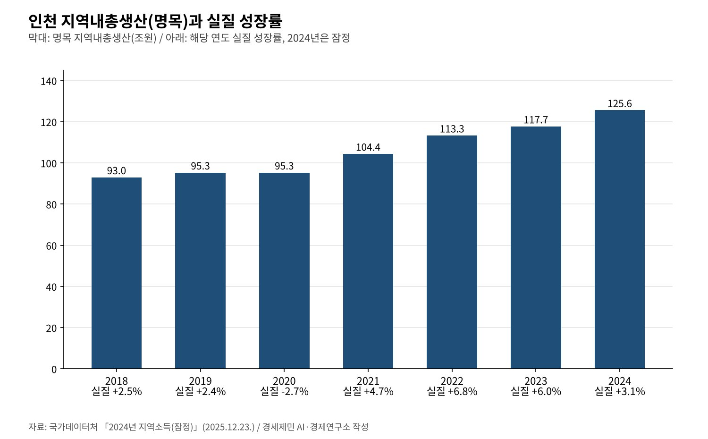
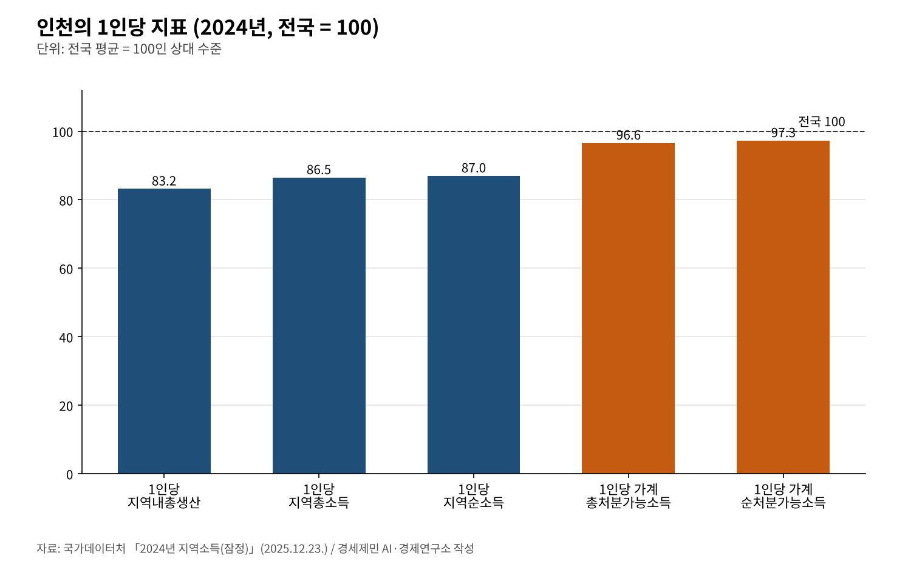

[인천 산업연관분석④] 인천 지역내총생산 125조6000억원, 1인당은 전국의 83%
2024년 인천 지역내총생산 명목 125조6000억원, 전국의 4.9%·실질 3.1% 성장
1인당 지역내총생산 4119만원으로 전국 평균 4948만원의 83.2%
인천 생산의 37.6%는 다른 지역 수요가 만들고, 상용근로자 임금은 1년 새 1.7% 줄어
AI경세제민=김갑봉 기자 | 인천의 2024년 지역내총생산은 명목 125조6000억원이다. 전국 2561조원의 4.9%다. 실질 성장률은 3.1%로 전국 평균 2.0%를 웃돌았다. 국가데이터처가 2025년 12월 23일 낸 2024년 지역소득 잠정치다.
이 연재의 옛 원고는 2023년 기준 117조원을 다뤘다. 한 해 사이 7조9000억원이 늘었다. 그러나 인천 사람 한 명이 만드는 몫은 여전히 전국 평균에 못 미치고, 생산의 상당 부분은 바깥 수요에 기댄다.
앞선 편들이 산업과 일자리를 봤다면 이 글은 돈의 흐름을 본다. 얼마를 만들고, 누가 벌고, 무엇이 인천에 남는지 공표 통계로 따진다. 옛 원고의 산업별 비중 추산과 1인당 생산성 계산은 쓰지 않는다.
7년 사이 93조원에서 125조원으로
인천 명목 지역내총생산은 2018년 93조원에서 2024년 125조6000억원으로 늘었다. 실질 성장률은 2020년 -2.7%를 빼면 해마다 플러스였다. 2022년 6.8%, 2023년 6.0%로 높았다가 2024년 3.1%로 내려왔다.
2024년 성장은 제조업(7.7%)과 운수업(6.8%)이 끌었다. 건설업(-8.0%)과 부동산업(-1.5%)은 줄었다. 지출로는 설비투자가 4.2% 늘고 건설투자는 9.5% 줄었다. 민간소비는 0.4% 느는 데 그쳤다.

인천 경제의 지출 구조에서 민간소비 비중은 2023년 55.6%에서 2024년 53.5%로 낮아졌다. 건설투자 비중은 20.8%에서 17.9%로 내려갔다. 정부소비는 18.4%, 설비투자는 9.3%다. 소비와 건설이 동시에 식었다.
1인당은 전국의 83%, 가계 소득은 97%
2024년 인천의 1인당 지역내총생산은 4119만원이다. 전국 평균 4948만원을 100으로 놓으면 83.2다. 서울은 123.7, 울산은 172.2다. 인천 사람 한 명이 만든 부가가치가 전국 평균보다 829만원 적다.
소득으로 가면 격차가 준다. 1인당 지역총소득은 4341만원으로 86.5, 1인당 가계총처분가능소득은 2687만원으로 96.6이다. 인천에서 만든 몫보다 인천 가계가 쓰는 몫이 전국 평균에 더 가깝다.

지역총소득은 132조4000억원으로 지역내총생산의 105.4% 수준이다. 인천 거주자가 바깥에서 받는 소득이 바깥으로 나가는 소득보다 많다. 가계총처분가능소득은 81조9000억원으로 7.1% 늘어 전국 평균 5.5%를 앞섰다.
지역총소득 가운데 피용자보수가 53.7%, 영업잉여와 재산소득이 16.2%다. 일해서 받는 소득이 절반을 넘는다. 1인당 가계 소득이 전국 수준에 가까운 데에는 서울·경기에서 일하고 받는 임금이 섞여 있다고 연구소는 본다.
인천 생산의 37.6%는 다른 지역 수요
한국은행 2020년 지역산업연관표는 인천 생산이 누구의 수요로 생겼는지 보여 준다. 인천 생산 214조8000억원 가운데 인천 최종수요가 만든 몫은 31.4%다. 다른 지역 수요가 37.6%, 수출이 31.0%다.
다른 지역 가운데 서울·경기를 뜻하는 수도권 수요가 19.2%다. 충청권 5.2%, 동남권 4.6%가 뒤를 잇는다. 인천 공장과 물류는 서울·경기의 소비와 투자, 해외 수요를 받아 돌아간다.
부가가치로 보면 인천 안 수요의 몫이 조금 커진다. 인천 부가가치 92조6000억원 가운데 인천 최종수요 몫은 40.2%, 다른 지역 35.6%, 수출 24.2%다. 바깥 수요가 꺾이면 인천의 생산과 소득이 함께 흔들리는 구조다.
반대 방향도 있다. 인천 최종수요 1원은 생산을 1.807원 일으키는데 그 가운데 0.961원이 다른 지역 몫이다. 인천 안 몫 0.847원보다 바깥 몫이 크다. 2편에서 본 의존 구조가 소득의 흐름에서도 되풀이된다.
임금은 전국보다 39만5000원 적다
돈의 흐름 끝에는 임금이 있다. 고용노동부 조사에서 2026년 4월 인천 상용근로자 1인당 임금총액은 389만9000원이다. 1년 전보다 1.7% 줄었다. 같은 기간 전국 평균은 1.9% 올라 429만4000원이 됐다.
물가를 빼면 인천 실질임금은 4.1% 줄었다. 근로시간은 174.0시간으로 전국보다 1.5시간 길다. 더 오래 일하고 덜 받는 셈이다. 인천 산업별로는 금융·보험업(710만5000원), 전기·가스·증기(533만9000원)가 높다.
일자리 수는 늘었다. 2026년 8월 인천 종사자는 99만명으로 1년 새 2만4000명(2.5%) 늘었다. 일자리가 느는데 임금이 줄면 늘어난 일자리가 주로 임금이 낮은 쪽에서 나왔을 수 있다. 업종별 대조는 다음 조사를 기다려야 한다.
무엇을 남길 것인가
인천은 해마다 더 많이 만든다. 그러나 1인당 생산은 전국의 83%이고 생산의 3분의 2는 바깥 수요에 기댄다. 임금은 전국보다 낮고 2026년 4월에는 뒷걸음쳤다. 크기와 몫이 따로 움직인다.
첫째, 지역 안 수요가 생산으로 이어지는 고리를 늘려야 한다. 인천 최종수요 1원 가운데 0.847원만 인천 생산으로 돌아온다. 공공조달과 지역 기업 간 거래를 넓히면 이 계수가 다음 표에서 오를 수 있다.
둘째, 높은 임금을 주는 산업을 키워야 한다. 인천에서 임금이 높은 금융·보험과 전력은 비중이 작다. 운송서비스 특화를 물류금융과 데이터 서비스로 넓히면 생산과 임금이 함께 오를 수 있다.
수출 통계는 이번 글에서 다루지 못했다. 옛 원고의 2024년 반도체 수출 177억달러는 세관 원문을 찾지 못해 뺐다. 인천에 남는 몫을 키우는 일은 결국 인천에서 만든 가치가 인천 사람의 임금으로 돌아오게 하는 일이다.
참고문헌
기관 자료
- 국가데이터처, 「2024년 지역소득(잠정)」, 2025년 12월 23일. KDI 경제교육·정보센터 게재. https://eiec.kdi.re.kr/policy/materialView.do?num=275164
- 한국은행 경제통계2국 국민계정부 투입산출팀, 「2020년 지역산업연관표 작성 결과」(보도자료, 붙임 포함), 2025년 7월 2일. KDI 경제교육·정보센터 게재. https://eiec.kdi.re.kr/policy/materialView.do?num=268345
- 고용노동부, 「2026년 8월 사업체노동력조사 및 2026년 4월 시도별 임금·근로시간조사 결과」, 2026년 9월 30일. KDI 경제교육·정보센터 게재. https://eiec.kdi.re.kr/policy/materialView.do?num=287627
- 국가데이터처 소득통계과, 「지역내총생산(GRDP)」 지표 설명(e-나라지표), 2025년 12월 23일 갱신. https://www.index.go.kr/unify/idx-info.do?idxCd=1008
- 윤갑식, 「인천경제의 지역간 교역구조와 산업연관분석」, 『한국경제지리학회지』 제11권 제1호(45~58쪽), 한국경제지리학회, 2008년 3월 31일. https://koreascience.or.kr/article/JAKO200833338551162.page
- Seongha Lee·Taku Ishiro, 「Regional economic analysis of major areas in South Korea: using 2005–2010–2015 multi-regional input–output tables」, 『Journal of Economic Structures』 제12권, Springer(Pan-Pacific Association of Input-Output Studies), 2023년. https://doi.org/10.1186/s40008-023-00304-z
[사진 출처]
- [사진1] Jinho Jung on Flickr, "Incheon bridge (7).jpg", 위키미디어 공용, 퍼블릭 도메인. https://commons.wikimedia.org/wiki/File:Incheon_bridge_(7).jpg
※ 이 기사는 AI 프로그램 클로드를 활용해 작성했습니다.
관련기사
- [인천 산업연관분석②] 인천 중간재, 인천산은 4분의 1… 2020년 표로 다시 본 의존 구조
- [인천 산업연관분석③] 공장은 더 만들고 일자리는 줄었다, 인천 산업의 두 얼굴
- [서평] 슘페터 『경제분석의 역사』 1권, 300년 전 질문이 오늘도 유효하다
- [서평] 『진보를 위한 주식투자』, 일하는 사람은 자본시장을 외면해도 되는가
저작권자 © AI경세제민 무단전재 및 재배포, AI학습 및 활용 금지